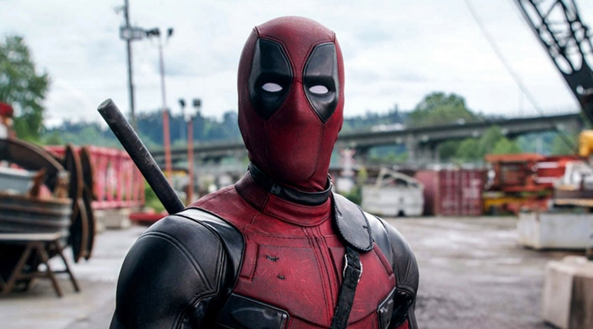

About Deadpool(Me)
So you've probably heard everything under the sun about me. Some people believe I'm a hero because I've been part of some of the most legendary teams in the world like Mercs for Money, X-Men, and most notably X-force, but I continue to disagree. I'm Canadian, my favorite food is chimichanga (but im sure you knew that already), and I'm funny(we knew that too).
Deadpool 2
My Characteristics
- Height: 6'2"
- Eyes: Brown
- Sexuality: Pansexual
Friends
You know I've always wanted to be Spiderman's friend but we all know he's too hollywood now. I count Daredevil as one of my friends, even though hes serious 98% of the time. There's one person, though, who I admire and consider one of my closest friends and thats the legend himself: Captain America. Below I've plugged some of their pages. Let them know I sent you!